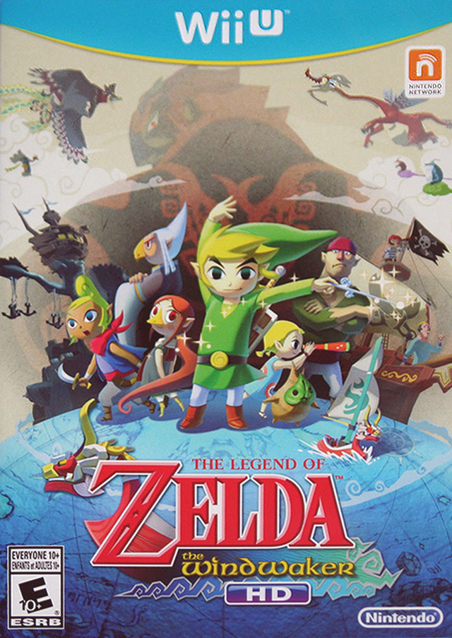

 The Legend of Zelda is a action-adventure video-game series created by Japanese game designers Shigeru Miyamoto and Takashi Tezuka. It is primarily developed and published by Nintendo, although some portable installments and re-releases have been outsourced to Capcom, Vanpool and Grezzo. The series' gameplay incorporates elements of action, adventure and puzzle-solving games.
The series centers on Link, the playable character and chief protagonist. Link is often given the task of rescuing Princess Zelda and the kingdom of Hyrule from Ganon, who is the principal antagonist of the series; however, other settings and antagonists have appeared in several games. The plots commonly involve a relic known as the Triforce, a set of three omnipotent golden triangles. The protagonist in each game is usually not the same incarnation of Link, but a few exceptions exist.
Since the original The Legend of Zelda was released in 1986, the series has expanded to include 19 entries on all of Nintendo's major game consoles, as well as a number of spin-offs. An American animated TV series based on the games aired in 1989 and individual manga adaptations commissioned by Nintendo have been produced in Japan since 1997. The Legend of Zelda is one of Nintendo's most prominent and successful franchises, selling over 80 million copies as of 2017; many of its games are considered by critics to be among the greatest video games of all time.
*The above information is quoted directly from Wikipedia. The image is the cover of the The Legend of Zelda: The Wind Waker HD game for the Wii U pulled from Google. The song is "All These Fairies But No Fountain" by ChiefTaza from Youtube